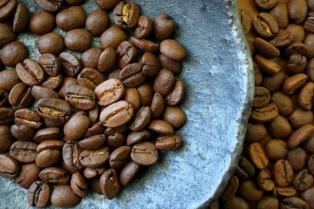

グアテマラコーヒーとは？

グアテマラコーヒーは、中米グアテマラの肥沃な火山性土壌と理想的な環境で育まれた高品質なコーヒー豆です。
果物のようなフレッシュな酸味、華やかな甘い香り、そして豊かなコクが特徴で、後味はすっきりとしています。
グアテマラという国は日本の約3分の1の面積ながら、中米有数のコーヒー大国です。
栽培地域が広いため、産地や等級によっても微妙に味わいが異なり、フルーティーな酸味やチョコレートのような甘さ、 ナッツのような香ばしさなど、多彩な風味が楽しめるのも魅力の一つです。日本でも比較的知名度が高く、 ブレンドコーヒーや缶コーヒーなどにもよく使用されており、世界的には甘い香りと力強いコクで高い評価を得ています。
栽培地域が広いため、産地や等級によっても微妙に味わいが異なり、フルーティーな酸味やチョコレートのような甘さ、 ナッツのような香ばしさなど、多彩な風味が楽しめるのも魅力の一つです。日本でも比較的知名度が高く、 ブレンドコーヒーや缶コーヒーなどにもよく使用されており、世界的には甘い香りと力強いコクで高い評価を得ています。
グアテマラコーヒーの産地と歴史
グアテマラコーヒーは、火山と標高の高い山岳地帯が広がるグアテマラ南部を中心に栽培されています。
特に「アンティグア」「ウェウェテナンゴ」「サンマルコス」「アティトラン」「コバン」「フライハーネス」
「ニューオリエンテ」「アカテナンゴ」の8つの地域は、世界的にも高品質なコーヒー豆の産地として知られています。
豊かな土壌、昼夜の寒暖差、そして適度な降水量が、香り高く、複雑な味わいを持つコーヒーを生み出すのです。
1969年には、グアテマラ全国コーヒー協会（ANACAFE：アナカフェ）が設立されました。 これは生産者の共同出資による組織であり、品質向上や生産管理、気候や生産体制に関する研究、生産者の教育、 さらには世界市場へのマーケティング活動を行っています。ANACAFEの活動により、 グアテマラコーヒーは一貫した品質管理とブランド価値を維持し続け、世界的にも高い評価を受けるようになりました。
1969年には、グアテマラ全国コーヒー協会（ANACAFE：アナカフェ）が設立されました。 これは生産者の共同出資による組織であり、品質向上や生産管理、気候や生産体制に関する研究、生産者の教育、 さらには世界市場へのマーケティング活動を行っています。ANACAFEの活動により、 グアテマラコーヒーは一貫した品質管理とブランド価値を維持し続け、世界的にも高い評価を受けるようになりました。
グアテマラコーヒーの味わい
グアテマラコーヒーは、フルーティな酸味と花のような芳しい香り、そしてチョコレートやナッツのようなコクが特徴的です。
酸味とコクがバランスよく感じられ、後から花の蜜のような甘みが広がり、余韻が長く続くとされています。その複雑で繊細な味わいは、
産地や等級によって微妙に異なるため、飲むたびに楽しみがあり、上品な味わいが楽しめます。